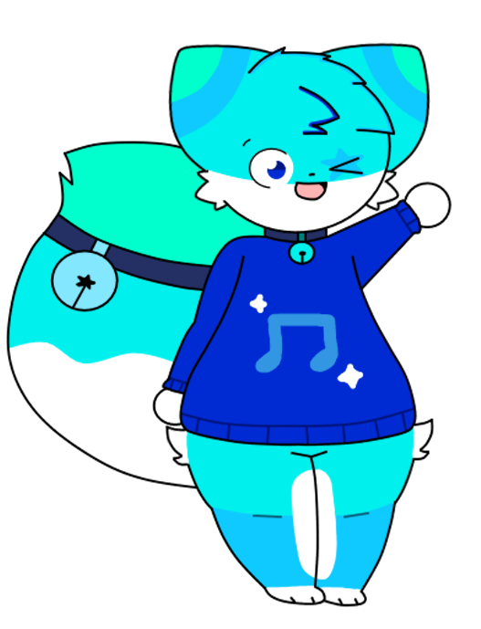

fmaj
basic info
Gender: Male
Height: 5'8
Weight: 189 lbs
Sexuality: Bisexual
biography
FMAJ is a cyan fox, He wears a blue sweater with a music note onto it. He's usually very silly and playful, but can get quite obnoxious at times. He also works at a Frutiger Aero themed shop, not sure what kind of shop it is, but he sells a lot of various things, same with Chordie. His voice is vocoded to the FMAJ Vocoder preset from Orange Vocoder.
Fun fact: If you didn't notice, he wears NO PANTS!!!!!